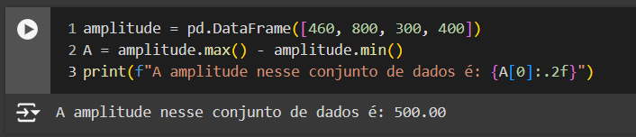

O que aprendi:
-- Amostragem --
Amostragem Aleatória:
• Assim como o nome diz, a amostragem aleatória é basicamente a retirada de amostras de um Conjunto de Dados de forma aleatória.
Amostragem sistemática:
• A amostragem sistemática, consiste em retirada de amostras na qual se realiza uma busca aleatória pelo primeiro elemento, e os demais elementos são encontrados através de um determinado intervalo.

Amostragem Estratificada:
• A amostragem estratificada consiste na retirada de amostras na qual inicialmente se separa os dados em grupos homogeneos, e apartir disso é retirado uma amostra aleatória de cada grupo.

-- Tendências Centrais --
Moda:
Moda em um conjunto de dados é representado pelo elemento que aparece com maior frequencia dentre os demais. Podendo ser:
• Modal (quando um elemento se repete mais que os demais),
• Bimodal (quando dois elementos se repetem igualmente mais que os demais),
• Polimodal (quando três ou mais elementos se repetem igualmente mais que os demais),
• Amodal (quando todos os dados aparecem com a mesma frequencia).
Mediana:
Mediana em um conjunto numérico ordenado é representada pelo numero ou média dos numeros que ocupam a posição central.
Media aritmética:
A média de um conjunto numérico é representada pela soma de todos o elementos do conjunto, divido pela quantidade de elementos.
Percentil:
Percentil é dado pelo valor de um dado conjunto numérico ordenado, de forma a que o menor valor equivale a 0 e o maior valor equivale a 100, ou seja, de 0% a 100%. Podendo assim encontrar qual valor pertence a cada percentil, seja de 20%, 45% ou qualquer outro.
Quartil:
Seguindo a mesma linha de raciocinio, o quartil representa as medidas de 1/4, 2/4, e 3/4 de um conjunto numérico, ou seja, num conjunto numérico de 0 a 100:
• 1/4 = 25.
• 2/4 = 50.
• 3/4 = 75.

-- Medidas de Dispersão --
Amplitude:
É definida pela diferença entre o maior e o menor elemento de um conjunto de valores.
Variância:
É definida pela diferença ao quadrado entre todos os elementos de um conjunto de valores, divido pelo numero de elementos presentes no conjunto.
Desvio Padrão:
Já o desvio padrão é dado pelo quadrado da variância, ou seja:
• desvio padrao = variancia²
Qui Quadrado:
Se define pela probabilidade de relação entre duas ou mais variáveis numa tabela cruzada.
Seu cálculo é determinado pela diferença entre a tabela de dados como base, menos a tabela com os dados esperados ao quadrado, dividido pela tabela de dados esperados, ou seja:
• df_result = ((df_base - df_esperado) ^ 2) / df_esperado.